练习: 了解线性失稳分析
目标
成功完成此练习后，您将能够：
- 执行线性失稳分析。
假定背景
在本练习中，您将计算导致薄壁压缩结构稳定性失败的压缩力。此结构是圆形的且由钢构成。除了这些要求，还要关注失败的形状，它是否类似于柱或薄壁的局部失稳的失稳形状？仅支持该柱且假定材料为线性。
将使用细化的网格并且您将学习新的 AutoGEM 控制以生成所需质量的元素。
“关闭窗口”(Close Window) “拭除未显示的”(Erase Not Displayed) 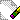
“拭除未显示的”(Erase Not Displayed) 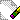 Simulate_Analysis\CompStrut
Simulate_Analysis\CompStrut
 EULER_TRACTION_STRUT_SIMULATE.PRT
EULER_TRACTION_STRUT_SIMULATE.PRT
|
|
||
 |
Creo Parametric 用户打开 EULER_TRACTION_STRUT.PRT。 | |
|
|
||
-
任务 1. 定义约束。
1. 在功能区中，选择“精细模型”(Refine Model) 选项卡。
2. 在“基准”(Datum) 组中单击“点”(Point) 。“基准点”(Datum Point) 对话框随即出现。
3. 在模型中，选择定义管内部直径的弧，如图所示。
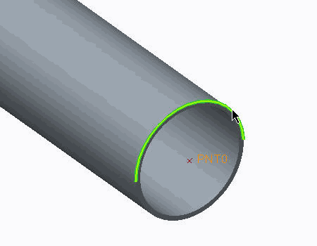
4. 在“基准点”(Datum Point) 对话框中，选择刚刚在“参考”(References) 部分中选定的边。从“在其上”(On) 下拉菜单中选择“中心”(Center)。请注意，将在左列创建新点。
5. 在左列，选择“新建点”(New Point)。
6. 在模型中，为刚刚选择用于定义第二个点在弧管的另一端选择弧。
7. 在“参考”(References) 部分中，根据需要从“在其上”(On) 下拉菜单中选择“中心”(Center)。请注意，将在左列创建新点。
8. 单击“确定”(OK)。
9. 在功能区中，选择“精细模型”(Refine Model) 选项卡。
10. 从“连接”(Connections) 组中单击“刚性连接”(Rigid Link)
 。将出现“刚性连接定义”(Rigid Link Definition) 对话框。
。将出现“刚性连接定义”(Rigid Link Definition) 对话框。
11. 按住 CTRL 键并在模型中选择新创建的点和端平整曲面，如图所示。
12. 单击“确定”(OK)。
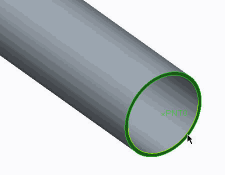13. 在功能区中，选择“精细模型”(Refine Model) 选项卡。
14. 从“连接”(Connections) 组中单击“刚性连接”(Rigid Link)
。将出现“刚性连接定义”(Rigid Link Definition) 对话框。
15. 按住 CTRL 键并在该结构的另一端选择 PNT1 及其相应的平整曲面。
16. 单击“确定”(OK)。
17. 在功能区中，选择“主页”(Home) 选项卡。
18. 在“约束”(Constraints) 组中单击“位移”(Displacement)
 。将出现“约束”(Constraint) 对话框。
。将出现“约束”(Constraint) 对话框。
19. 从“参考”(References) 下拉菜单中选择“点”(Points)。
20. 在模型中，选择创建的第一个点。
21. 在“平移”(Translation) 部分中，单击“自由平移”(Free Translation) 用于 Y 平移。
22. 单击“确定”(OK)。
23. 在功能区中，选择“主页”(Home) 选项卡。
24. 在“约束”(Constraints) 组中单击“位移”(Displacement)
。将出现“约束”(Constraint) 对话框。
25. 从“参考”(References) 下拉菜单中选择“点”(Points)。
26. 在模型中，选择创建的第二个点。
27. 在“旋转”(Rotation) 部分中，单击“固定的旋转”(Fixed Rotation)
 用于 Y 旋转。
用于 Y 旋转。
28. 单击“确定”(OK)。
所有这些约束都是同一个约束集的一部分，因此，在系统上同时运行。
-
任务 2. 定义压缩载荷。
1. 在功能区中，选择“主页”(Home) 选项卡。
2. 在“载荷”(Loads) 组中单击“力/力矩载荷”(Force/Moment Load)
 。将出现“力/力矩载荷”(Force/Moment Load) 对话框。
。将出现“力/力矩载荷”(Force/Moment Load) 对话框。
3. 从“参考”(References) 下拉菜单中选择“点”(Points)。
4. 在模型中，选择定义的第一个点。
5. 在“力”(Force) 部分的 Y 字段中键入 -800000。
6. 单击“确定”(OK)。
-
任务 3. 定义 AutoGEM 控制并网格化模型。
1. 在功能区中，选择“精细模型”(Refine Model) 选项卡。
2. 在 AutoGEM 组中从“控制”(Controls) 下拉菜单中选择“硬点”(Hard Point) 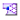。“硬点控制”(Hard Point Control) 对话框随即出现。
3. 在“参考”(References) 部分中，选择“阵列”(Pattern)。
4. 在模型树中，展开“阵列 1 的阵列 2”(Pattern 2 of Pattern 1)。将列出 84 点阵列。
5. 选择“基准点的阵列 1”(Pattern 1 of Datum Point)。
6. 按住 SHIFT 键并选择“基准点的阵列 84”(Pattern 84 of Datum Point) 以选择模型中的所有阵列点。所有的点阵列将出现在“硬点控制”(Hard Point Control) 对话框的选择查询范围中。
7. 在“硬点控制”(Hard Point Control) 对话框中，单击“确定”(OK)。
8. 在功能区中，选择“精细模型”(Refine Model) 选项卡。
9. 从 AutoGEM 组中的“控制”(Controls) 下拉菜单中选择“薄实体”(Thin Solid) > “检测薄实体”(Detect Thin Solids)。“自动检测薄实体”(Auto Detect Thin Solids) 对话框随即出现。
10. 在“特征厚度”(Characteristic Thickness) 字段中键入 4。
11. 单击“开始”(Start)。“自动检测薄实体”(Auto Detect Thin Solids) 对话框随即关闭。
12. 在模型树中，展开“AutoGEM 控制”(AutoGEM Controls)。请注意正在定义的 AutoGEMControl2。
13. 右键单击 AutoGEMControl2，然后选择“编辑定义”(Edit Definition)。“薄实体控制”(Thin Solid Control) 对话框随即出现。
14. 请注意正在匹配的曲面对。单击“确定”(OK)。
15. 在功能区中，选择“精细模型”(Refine Model) 选项卡。
16. 从 AutoGEM 组中单击AutoGEM
 。将出现 AutoGEM 对话框。
。将出现 AutoGEM 对话框。
17. 单击“创建”(Create)。
18. 检查生成的网格。单击“关闭”(Close) 以关闭所有对话框。提示保存网格时单击“否”(No)。
-
任务 4. 定义并运行静态分析和预应力分析。
1. 在功能区中，选择“主页”(Home) 选项卡。
2. 在“运行”(Run) 组中单击“分析和研究”(Analyses and Studies)
 。将出现“分析和设计研究”(Analyses and Design Studies) 对话框。
。将出现“分析和设计研究”(Analyses and Design Studies) 对话框。
3. 右键单击 euler_strut_compression_force，然后选择“编辑”(Edit)。将出现“静态分析定义”(Static Analysis Definition) 对话框。
4. 校验或完成以下操作：
- 在“名称”(Name) 字段中键入 euler_strut_compression_force。
- 选择显示在“约束集/元件”(Constraint Set/Component) 和“载荷集/元件”(Load Set/Component) 部分中的约束集和载荷集。
- 单击“收敛”(Convergence) 选项卡，然后从“方法”(Method) 下拉菜单中单击“单通道自适应”(Single-Pass Adaptive)。
5. 单击“确定”(OK) 返回到“分析和设计研究”(Analyses and Design Studies) 对话框。
6. 右键单击 euler_strut_buckling，然后选择“编辑”(Edit)。“失稳分析定义”(Buckling Analysis Definition) 对话框随即出现。
7. 校验或完成以下操作：
- 在“名称”(Name) 字段中键入 euler_strut_buckling。
- 单击“前一分析”(Previous Analysis) 选项卡，然后选择“使用来自前一设计研究的静态分析结果”(Use static analysis results from previous design study)。
- 校验 LoadSet1 已被选中。
- 在“失稳模式数”(Number of Buckling Modes) 字段中键入 8。
- 单击“收敛”(Convergence) 选项卡，然后从“方法”(Method) 下拉菜单中单击“单通道自适应”(Single-Pass Adaptive)。
8. 单击“确定”(OK) 返回到“分析和设计研究”(Analyses and Design Studies) 对话框。
9. 右键单击 euler_strut_buckling_MP，然后选择“编辑”(Edit)。“失稳分析定义”(Buckling Analysis Definition) 对话框随即出现。
10. 校验或完成以下操作：
- 在“名称”(Name) 字段中键入 euler_strut_buckling_MP。
- 单击“收敛”(Convergence) 选项卡，然后从“方法”(Method) 下拉菜单中单击“多通道自适应”(Multi-Pass Adaptive)。
- 在“收敛百分比”(Percent Convergence) 字段中键入 5。
- 在“多项式阶”(Polynomial Order) 部分的“最小”(Minimum) 字段中键入 1，在“最大”(Maximum) 字段中键入 9。
- 在“收敛于”(Converge on) 部分中，选择“BLF、局部位移和局部应变能”(BLF, Local Displacement and Local Strain Energy)。
11. 单击“确定”(OK) 返回到“分析和设计研究”(Analyses and Design Studies) 对话框。
12. 单击“配置运行设置”(Configure Run Settings)
 。将出现“运行设置”(Run Settings) 对话框。
。将出现“运行设置”(Run Settings) 对话框。
13. 默认情况下，结果和临时输出目录被设置在工作目录中。两种分析都储存在此位置。单击“确定”(OK)。
14. 在“分析和设计研究”(Analyses and Design Studies) 对话框中选择 euler_strut_compression_force，然后单击“开始运行”(Start Run)
 。单击“是”(Yes) 以运行交互诊断。
。单击“是”(Yes) 以运行交互诊断。
15. 分析完成后，单击“显示研究状况”(Display Study Status)
 查看汇总报告。仔细检查在汇总文件中显示的信息。标识最大 von Mises 和 Y 轴应力 (载荷方向)。
查看汇总报告。仔细检查在汇总文件中显示的信息。标识最大 von Mises 和 Y 轴应力 (载荷方向)。
16. 关闭所有对话框并返回至“分析和设计研究”(Analyses and Design Studies) 窗口。
17. 运行剩余的两个失稳分析。将输出目录写入同一位置，当前工作目录。
18. 仔细检查在汇总文件中显示的信息。相对于多通道自适应算法使用单通道自适应算法时，请注意失稳载荷因子 (BLF) 的值。
19. 完成两个研究后，关闭所有对话框并返回至“分析和设计研究”(Analyses and Design Studies) 窗口。
-
任务 5. 创建静态分析的条纹图。
1. 在“分析和设计研究”(Analyses and Design Studies) 窗口中选择 euler_strut_compression_force。
2. 单击“审阅结果”(Review Results)
 。将出现“结果窗口定义”(Result Window Definition) 对话框。
。将出现“结果窗口定义”(Result Window Definition) 对话框。
3. 创建最大位移的结果窗口，并检查显示的结果。放大变形的形状并打开透明叠加。
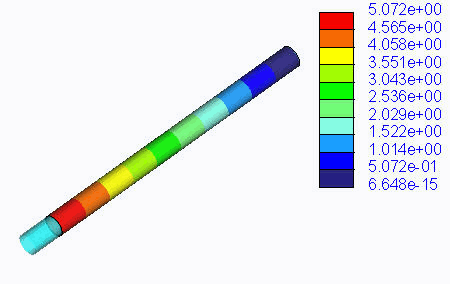4. 创建 von Mises 应力的结果窗口，并检查所显示的结果。放大变形的形状并打开透明叠加。
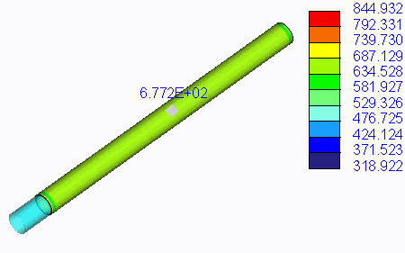5. 为轴向应力、沿 Y 轴的应力创建结果窗口并检查显示的结果。放大变形的形状并打开透明叠加。
请注意，虽然最大 von Mises 应力大约为 850 MPa，但从图例可知，结构只能承受 677 MPa 的应力。应力主要为压缩应力，因此，将在 Y 轴应力条纹图中报告相似的值。记录 677 MPa 应力。
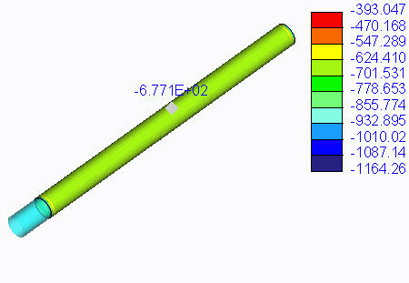6. 创建 P 级 (求解器所达到的多项式) 的结果窗口，并检查显示的结果。
从 P 级图中，可轻松地发现刚性连接的连接使约束上存在一些应力奇点。
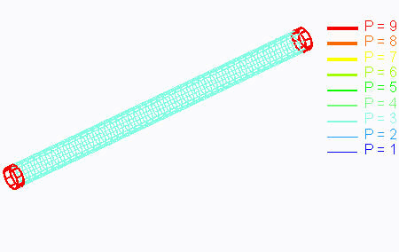7. 单击“文件”(File) > “退出结果”(Exit Results) 返回至 Creo Simulate。在“消息”(Message) 对话框中单击“否”(No)。
-
任务 6. 创建失稳分析的条纹图。
1. 在“分析和设计研究”(Analyses and Design Studies) 窗口中选择 euler_strut_buckling_MP。
2. 单击“审阅结果”(Review Results)
。将出现“结果窗口定义”(Result Window Definition) 对话框。
请注意，第一个 BLF 为 1.39。这表示在 677*1.39 = 941 MPa 的压缩应力下结构将收缩，并且等效的失稳载荷为 1112 MN。失稳理论几乎无效，因为选定钢等级的屈服强度为 950 MPa。
3. 完成以下步骤：
- 在“名称”(Name) 字段中键入 Mode_1。
- 在“标题”(Title) 字段中键入 BLF Mode 1。
- 在“研究选择”(Study Selection) 部分，从列表中选择“模式 1”(Mode 1)。
- 单击“数量”(Quantity) 选项卡。
- 从下拉菜单中选择“位移”(Displacement)。
- 从“单位”(units) 下拉菜单中选择 mm。
- 从“分量”(Component) 下拉菜单中选择“模”(Magnitude)。
- 单击“显示选项”(Display Options) 选项卡。选择“已变形”(Deformed) 和“透明叠加”(Transparent Overlay)。
4. 单击“确定并显示”(OK and Show)。
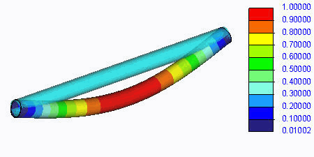5. 创建模式 2 的结果窗口并检查显示的结果。
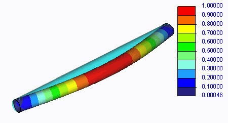6. 创建模式 3 的结果窗口并检查显示的结果。
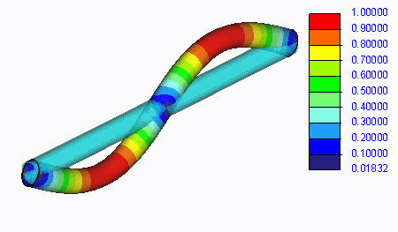7. 创建模式 5 的结果窗口并检查显示的结果。
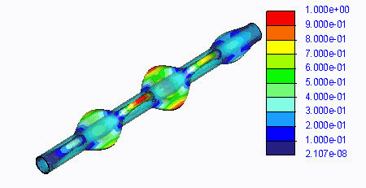8. 单击“文件”(File) > “退出结果”(Exit Results) 返回至 Creo Simulate。在“消息”(Message) 对话框中单击“否”(No)。
9. 在“分析和设计研究”(Analyses and Design Studies) 对话框中，单击“关闭”(Close)。
10. 单击“文件”(File) > “管理会话”(Manage Session) > “拭除当前”(Erase Current) 以关闭显示的窗口，并从内存中拭除模型。当提示您确认时，请单击“是”(Yes)。
练习就此结束。